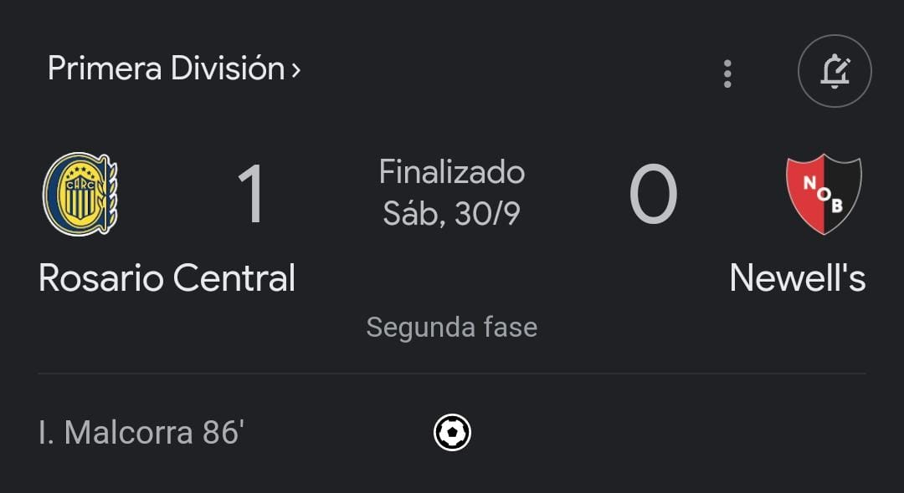
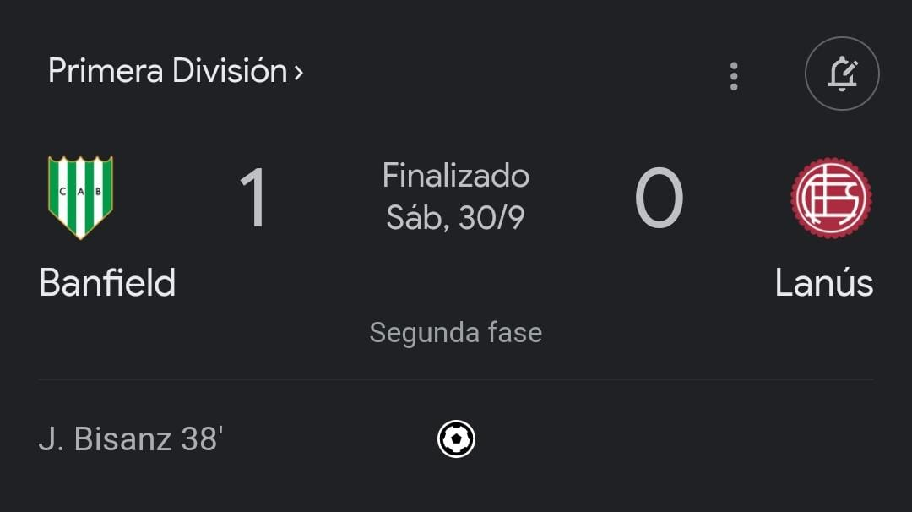

Galería de Imágenes de Deportes y Partidos Importantes




El básquetbol fue creado por el Dr. James Naismith en 1891 como un deporte de interior destinado a hombres jóvenes que se reunían en la sede de la YMCA de Springfield en Massachusetts. Actualmente hay 215 países afiliados a la FIBA, la entidad internacional que se encarga de la difusión y el desarrollo del básquetbol. Esto hace del básquetbol uno de los deportes más populares del mundo.
La historia del fútbol se considera a partir de 1869, año de fundación de la Asociación Inglesa de Fútbol, aunque en sus orígenes, al igual que los demás códigos de fútbol, se remontan varios siglos en el pasado, particularmente en las islas británicas durante la Edad Media
|
Equipo |
Pts |
PJ |
PG |
PE |
PP |
GF |
GC |
DIF |
|
River |
61 |
27 |
19 |
4 |
4 |
50 |
20 |
+30 |
|
talleres |
54 |
24 |
17 |
3 |
4 |
42 |
15 |
+27 |
|
San Lorenzo |
46 |
27 |
12 |
10 |
5 |
23 |
13 |
+10 |
|
Lanus |
45 |
27 |
12 |
9 |
6 |
38 |
27 |
+11 |
|
Estudiantes (LP) |
45 |
27 |
12 |
9 |
6 |
35 |
24 |
+11 |